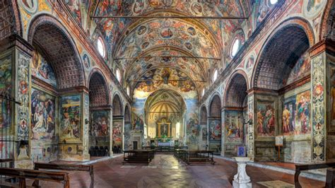

Lombardy
Overview
Lombardy is a region in northern Italy and one of the country's most economically powerful areas. It borders Switzerland and includes the Italian Alps as well as large plains. Lombardy is known for its fashion, finance, lakes, and historic cities. Its capital, Milan, is Italy’s second-largest city and a global center for design and business.
Quick Facts
- Capital: Milan
- Regional Language/Dialect: Lombard (Lombardo)
- Population: ~10 million
- Famous For: Milan, Lake Como, the Alps, opera, high-end shopping
- Fun Fact: Milan is home to Leonardo da Vinci’s "The Last Supper"!
Popular Dishes
Risotto alla Milanese
Polenta
Panettone

Taleggio
Famous Landmarks
Duomo di Milano
Lake Como

Sforza Castle

Santa Maria delle Grazie

Bergamo Alta

Best Time to Visit
The best times to visit Lombardy are spring (April–June) and autumn (September–October). Summer can be hot in cities, but perfect for visiting lakes. Winter is ideal for skiing in the Alps.
Regional Symbols
- Flag: